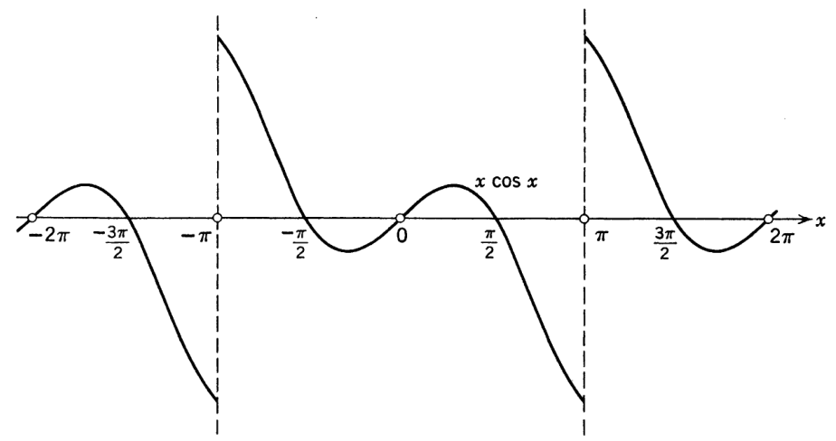
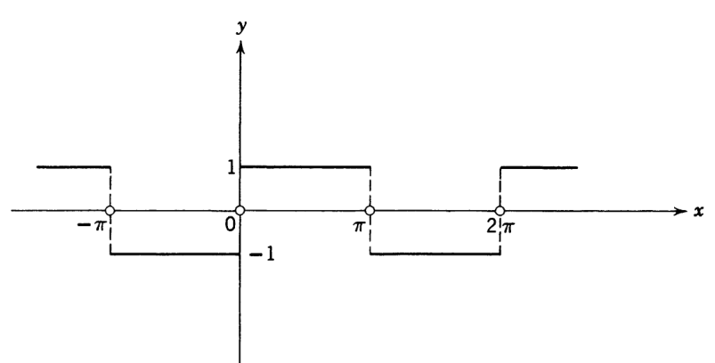

a. 初步说明
以下始终假设 f(x) 以 2π 为周期。若 f 为偶函数（见第 29 页），则 f(x)sinνx 为奇函数，f(x)cosνx 为偶函数，故 bν=π1∫−ππf(x)sinνxdx=0，得到的是余弦级数。反之，若 f 为奇函数，则 aν=π1∫−ππf(x)cosνxdx=0，得到的是正弦级数。
原注 1（第 598 页） 若原来只在 0<x<π 给定函数，可以按奇函数或按偶函数延拓到 −π<x<0。因此在较小的原区间上，既可以获得正弦展开，也可以获得余弦展开。
b. 函数 ϕ(x)=x2 的展开
对偶函数 x2，两次分部积分得
aν=π2∫0πx2cosνxdx=(−1)νν24(ν>0),a0=32π2.所以有展开
x2=3π2−4(12cosx−22cos2x+32cos3x−⋯).(30)逐项求导再除以 2，便在形式上恢复第 592 页 ϕ(x)=x 的级数 (23b)。
c. xcosx 的展开
这是一个奇函数（图 8.9），aν=0, bν=(2/π)∫0πxcosxsinνxdx。利用 ∫0πxsinμxdx=(−1)μ+1π/μ（μ=1,2,…），有
bν=π1∫0πx[sin(ν+1)x+sin(ν−1)x]dx=(−1)νν2−12ν(ν=2,3,…),b1=−21.因此
xcosx=−21sinx+2ν=2∑∞ν2−1(−1)ννsinνx.(31)
图 8.9 x cos x 的周期延拓
加上第 592 页为 ϕ(x)=x 得到的 (23b)，即有
x(1+cosx)=23sinx+2(1⋅2⋅3sin2x−2⋅3⋅4sin3x+3⋅4⋅5sin4x−⋯).(31a)将 −π<x<π 上等于 xcosx 的函数周期延拓后，其间断点与 §8.4d 的 ϕ(x) 相同（图 8.7）。但 x(1+cosx) 周期延拓后，在各段端点仍连续，甚至其导数也连续，因为因子 1+cosx 连同它的一阶导数都在端点消失，消除了间断。这解释了为什么相应级数对所有 x 一致收敛；与常数项级数 1/13+1/23+1/33+⋯ 比较，也可直接看出。
译者注 原书第 600 页在这句话中印作 (31)。从函数及分母的三次增长均可知，所指的是 (31a)。
d. 函数 f(x)=∣x∣
对此偶函数，bν=0, aν=(2/π)∫0πxcosνxdx。分部积分得
∫0πxcosνxdx=νxsinνx0π−ν1∫0πsinνxdx={0,−2/ν2,ν=0 为偶数,ν 为奇数.因此
∣x∣=21π−π4(cosx+32cos3x+52cos5x+⋯).(32)取 x=0 得到很有意思的公式
8π2=1+321+521+⋯.(32a)e. 一个分段常值函数
如第 32 页图 1.22 所示，函数
f(x)=sgnx=⎩⎨⎧−1,0,+1,−π<x<0,x=0,0<x<π是奇函数。因此 aν=0，bν=(2/π)∫0πsinνxdx 在 ν 为偶数时等于 0，在 ν 为奇数时等于 4/(πν)。故傅里叶级数为
f(x)=π4(1sinx+3sin3x+⋯).(33)特别取 x=π/2 又得莱布尼茨级数。将 ∣x∣ 的级数 (32) 逐项求导，也可形式地导得 (33)。

图 8.10 分段常值函数的周期延拓
f. 函数 ∣sinx∣
偶函数 f(x)=∣sinx∣ 可展开成余弦级数，系数由以下计算给出：
21πaν=∫0πsinxcosνxdx=21∫0π[sin(ν+1)x−sin(ν−1)x]dx={0,−2/(ν2−1),ν 为奇数,ν 为偶数.将偶数指标写成 2ν，得
∣sinx∣=π2−π4ν=1∑∞4ν2−1cos2νx.(34)g. cosμx 的展开。余切的部分分式展开。正弦的无穷乘积
设 μ 不是整数。区间 −π<x<π 上的 f(x)=cosμx 为偶函数，故 bν=0，而
21πaν=∫0πcosμxcosνxdx=21∫0π[cos(μ+ν)x+cos(μ−ν)x]dx=21[μ+νsin(μ+ν)π+μ−νsin(μ−ν)π]=μ2−ν2μ(−1)νsinμπ.因此
cosμx=π2μsinμπ(2μ21−μ2−12cosx+μ2−22cos2x−⋯).(35)从所给区间以 2π 为周期延拓后，函数在 x=±π 仍连续。令 x=π，两边除以 sinμπ，再以 x 代替 μ，就有
cotπx=π2x(2x21+x2−121+x2−221+⋯).(36)这就是余切的部分分式展开，类似于第三章第 286 页所讨论的有理函数的有限部分分式分解，是分析学中很重要的公式。改写为
cotπx−πx1=−π2x[12−x21+22−x21+⋯].当 0≤x≤q<1 时，右边第 n 项的绝对值小于 2/[π(n2−q2)]。故级数在此区间上一致收敛，可以逐项积分。两边乘以 π 再积分，左边为
π∫0x(cotπt−πt1)dt=logπxsinπx−a→0limlogπasinπa=logπxsinπx,右边为 log(1−x2/12)+log(1−x2/22)+⋯=limn→∞∑ν=1nlog(1−x2/ν2)。于是
logπxsinπx=n→∞limν=1∑nlog(1−ν2x2)=n→∞limlogν=1∏n(1−ν2x2)=logn→∞limν=1∏n(1−ν2x2).由对数还原便得著名的正弦无穷乘积
sinπx=πx(1−12x2)(1−22x2)(1−32x2)⋯.(36a)取 x=21 即得第 281 页已经导出的沃利斯乘积
21π=ν=1∏∞2ν−12ν⋅2ν+12ν=12⋅32⋅34⋅54⋯.原注 1（第 603 页） 这公式特别有意思，因为它直接显出 sinπx 在 x=0,±1,±2,… 各点为零。在这方面它相当于知道零点后对多项式所作的因式分解。
h. 更多例子
作类似的简短计算，可得以下展开。设 −π<x<π 上 f(x)=sinμx，则
sinμx=−π2sinμπ(μ2−12sinx−μ2−222sin2x+μ2−323sin3x−⋯).(37)令 x=π/2，利用 sinμπ=2sin(μπ/2)cos(μπ/2)，便得正割 1/cos(μπ/2) 的部分分式展开。以 x 代替 μ/2，写成
πsecπx=cosπxπ=4ν=1∑∞4x2−(2ν−1)2(−1)ν(2ν−1).类似于 (35)、(37)，双曲函数在 −π<x<π 上有展开
coshμxsinhμx=π2μsinhμπ(2μ21−μ2+12cosx+μ2+22cos2x−μ2+32cos3x+⋯),=π2sinhμπ(μ2+12sinx−μ2+222sin2x+μ2+323sin3x−⋯).